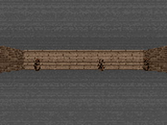
The imagination-trained agent playing the real game. It learned to strafe away from incoming fireballs having practised only in a dream — a learned neural simulator, never the real engine.
(40 held-out seeds)
(97.7 reactive oracle)
steps in training
(evolved in the dream)
Practise in a dream,
then play for real
A world model is a neural network that learns to imagine the game. Once it can dream convincingly, the agent rehearses thousands of lives inside the dream — cheap, fast, and safe — and only ever plays the real game.
The agent we ship never touched the real game while learning to act. It learned to dodge entirely from imagined experience.
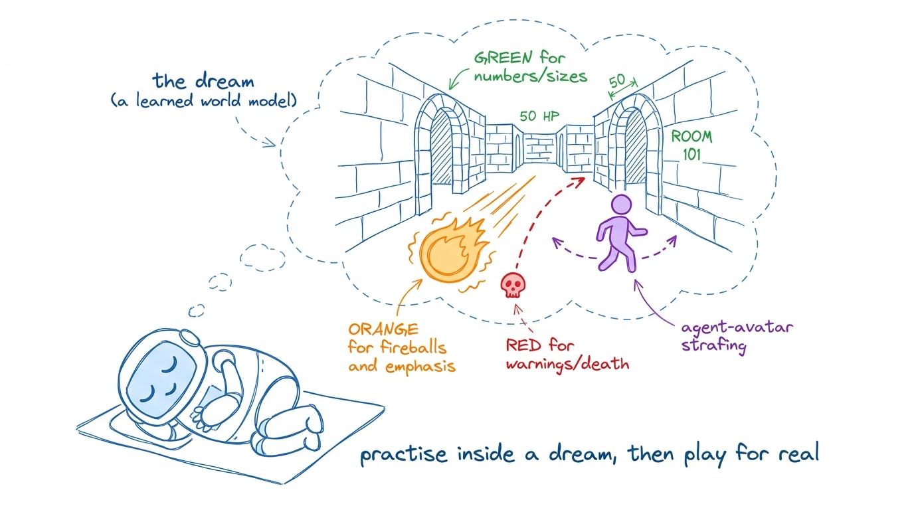
Abstract
World models promise sample-efficient reinforcement learning: rather than learn from expensive real
interaction, an agent practises inside a learned neural simulator. We reproduce, from scratch, the
landmark World Models (2018) result — training a policy
entirely inside its own dream on VizDoom take_cover — using the stronger discrete,
Transformer-based IRIS (2023) recipe: a VQ-VAE tokenizer, a
GPT world model over frame tokens, and a policy optimised purely on imagined rollouts. Our final agent —
which never touches the real game during learning — survives 96.8 steps on 40 held-out
episodes, beating a random policy by +30%, beating a model-free Double-DQN trained on the same
real-frame budget, and matching a hand-coded reactive oracle (97.7, i.e. 99% of oracle survival).
Beyond the number, we document the failures that make model-based RL brittle — codebook collapse dropping the
lethal object, a termination head that never predicts death, and world-model exploitation — and the
fixes that overcome them. We release the code and a playable neural simulator in which anyone can drive
the world model directly.
How it works — three from-scratch parts
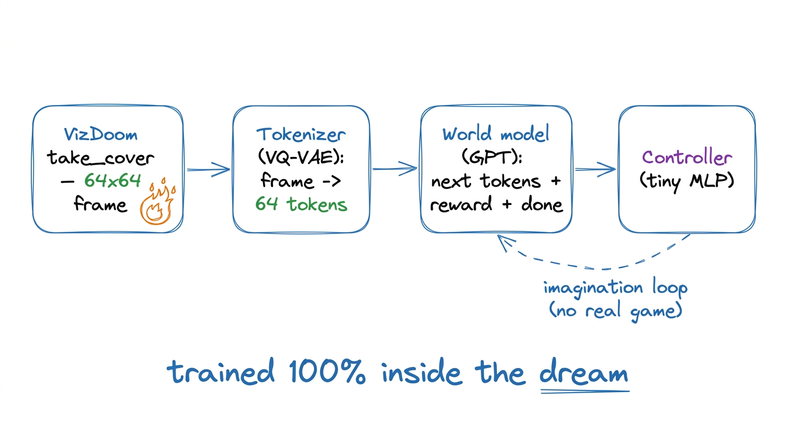
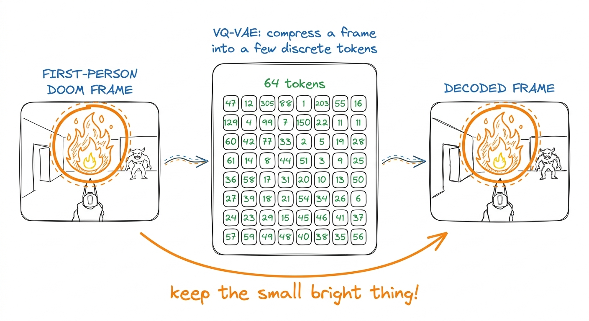
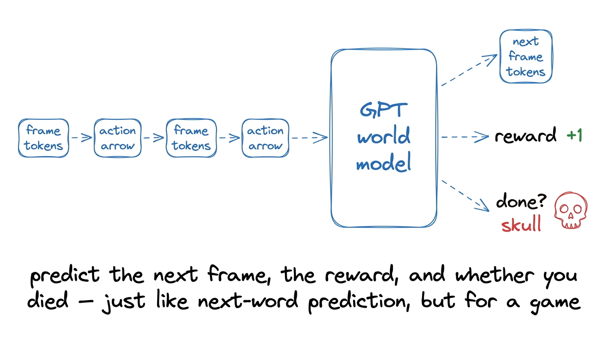
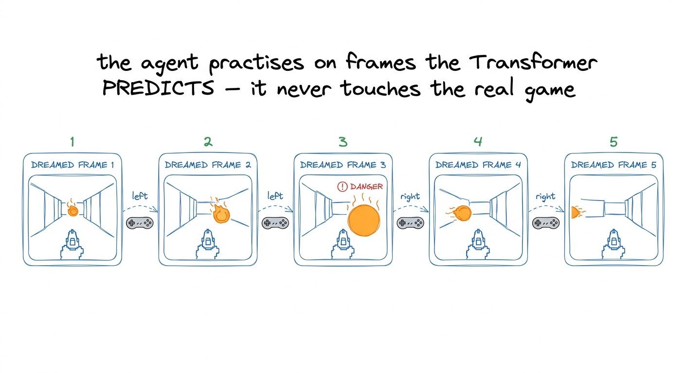
The lethal object — a fireball — is only a few bright pixels, so a naive tokenizer smooths it away and the dream has no threat. A warmth-weighted reconstruction loss keeps it (fireball-recall 0.53 → 0.95). Because death is ~1% of steps, an unweighted termination head collapses to "always alive"; a class-weighted loss restores it. And a KV cache makes the autoregressive dream 9.6× faster — the difference between feasible and infeasible policy search.
Trained in the dream, oracle-level survival
On 40 held-out seeds the imagination-trained agent nearly matches a hand-coded oracle and clearly beats random play — despite never training in the real game.
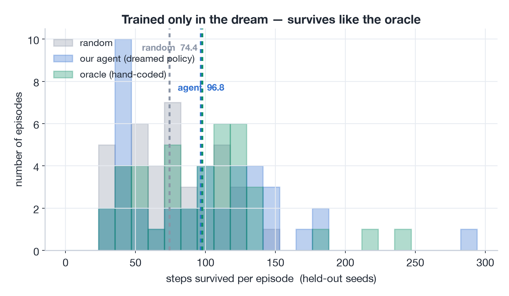
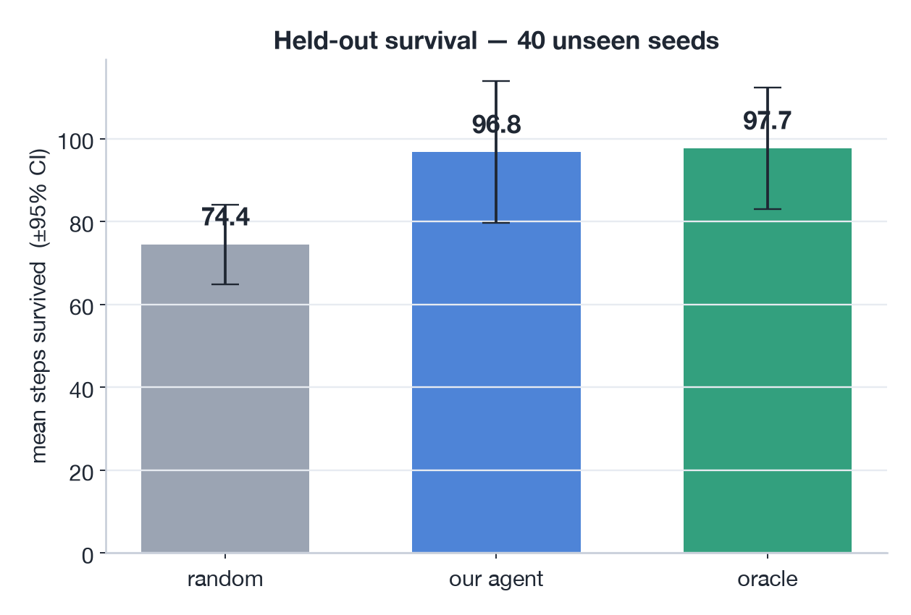
| Agent | Survival (steps) | Note |
|---|---|---|
| Random | 74.4 | lower reference |
| Model-free Double-DQN (same real-frame budget) | 90 | sample-efficiency bar |
| IRIS agent — trained 100% in imagination | 96.8 | held-out, 40 seeds |
| Heuristic oracle (reactive; sees the game) | 97.7 | upper reference |
Verified consistent across three independent seed sets. The agent's action distribution is
[0.00, 0.54, 0.46] over {no-op, left, right} — genuinely reactive, choosing its strafe from
the fireball rather than collapsing to one direction.
A genuine dodging reflex
Across ~3,900 real moments we logged where the fireball was and which way the agent stepped. The avoidance pattern is unmistakable:
• fireball on the left → agent moves right
• fireball on the right → agent moves left
It learned to react to the threat position — a real policy, learned only from dreaming.
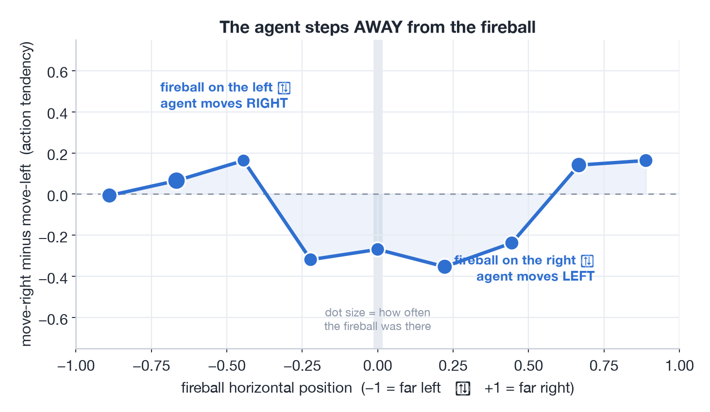
Sharp up close,
blurry far out
Imagined rollouts drift: errors compound the further ahead the model dreams. We measure it directly and train the policy on the short, faithful window.
Short imagined rollouts stay close to reality — so that is where policy search happens.
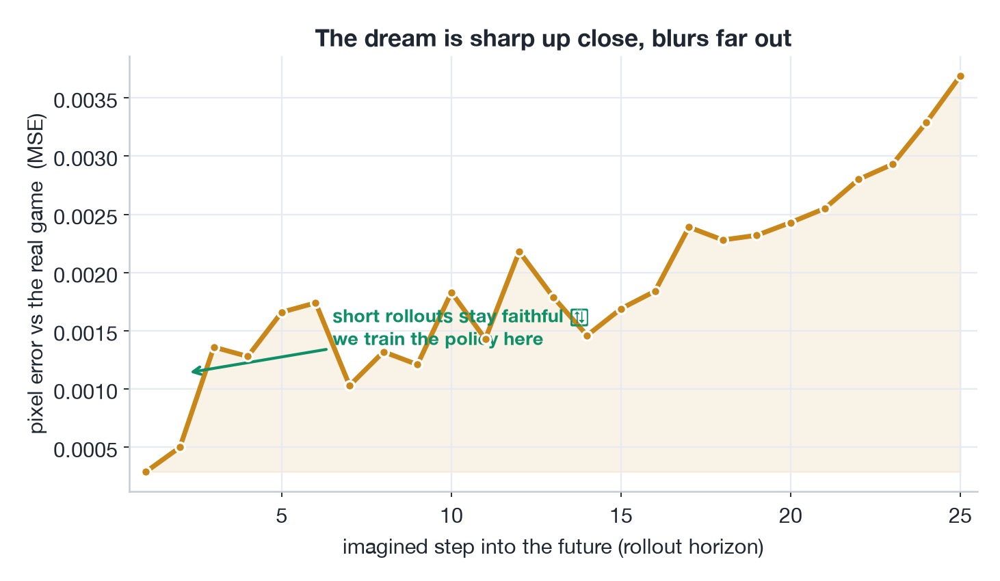
The agent tries to cheat the dream
Train a policy against a model and it will find the model's blind spots — an imagined "safe corner" where the dream forgets to spawn fireballs. It scores perfectly in imagination and dies instantly in reality. Early controllers collapsed to a single fixed action.
The fix — three disciplines. A tiny controller too small to memorise exploits; acting on the reconstructed image so the policy can't latch onto token quirks; and held-out selection with best-of-N — keep the brain that survives dream seeds it never trained on.
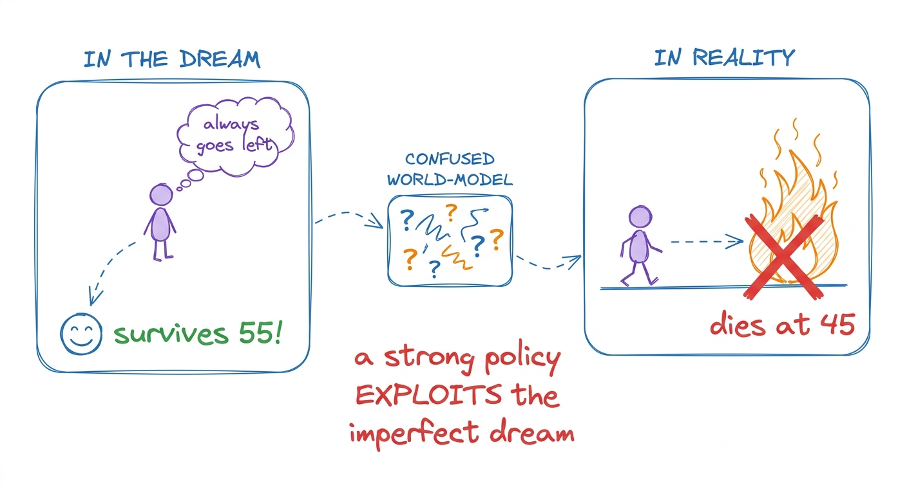
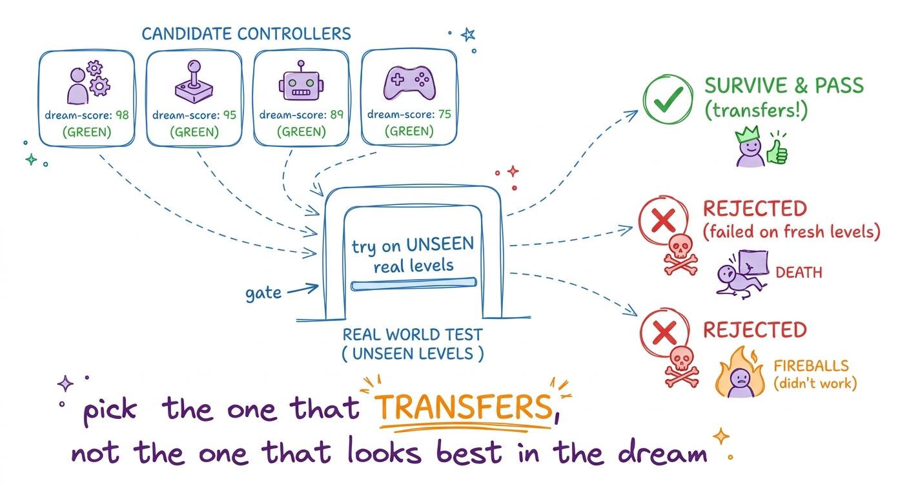
Play inside the dream 🕹️
There is no game engine below — every frame is predicted by the Transformer world model in response to your keypresses. Hold ←/→ to strafe, or switch to watch the AI to see the trained controller play inside its own dream. (First load cold-starts a GPU, ~30–60 s.)
Trouble loading here? Open the simulator in a new tab →
The same agent, two worlds
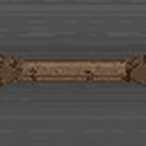
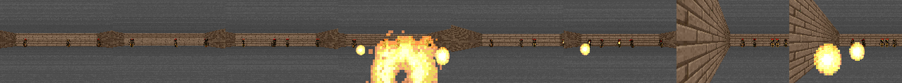
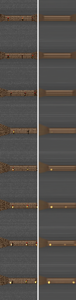
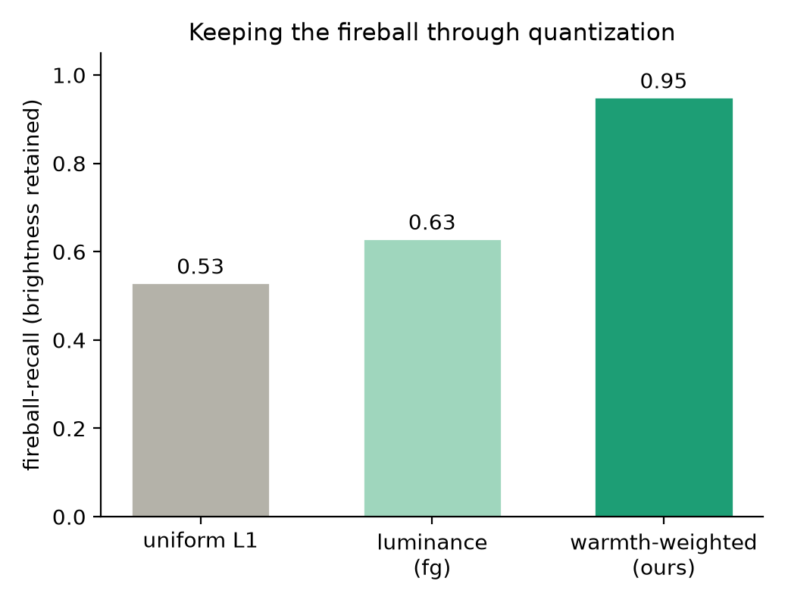
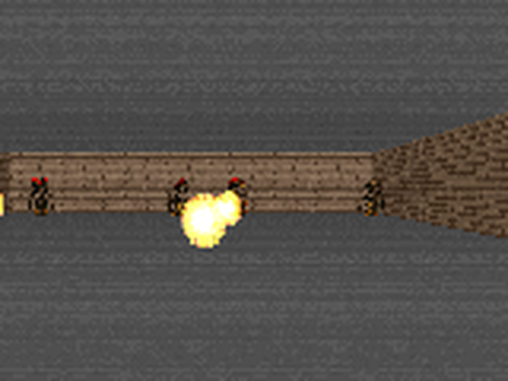
take_cover frame: the rare bright fireball is the whole challenge.One recipe, bigger worlds
The bouncing ball, the spreading outbreak, the incoming fireball — all are the same move: predict the next state, then plan inside the prediction. Master the small world and the method scales up.
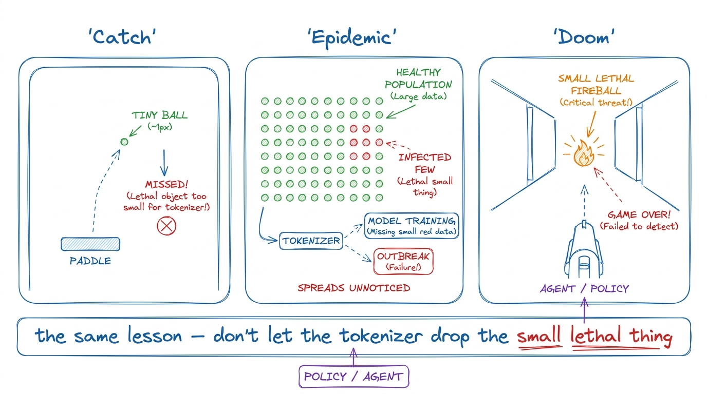
Citation
title = {Dreaming to Dodge: An Agent that Learns to Survive VizDoom
Entirely Inside a From-Scratch Transformer World Model},
author = {Dandekar, Rajat},
year = {2026},
note = {Vizuara AI Labs}
}